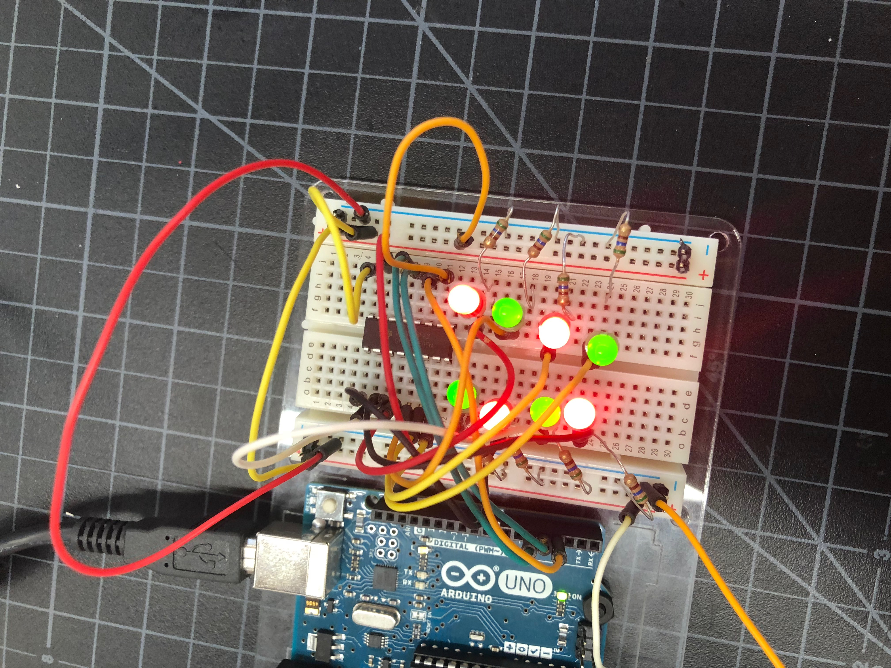
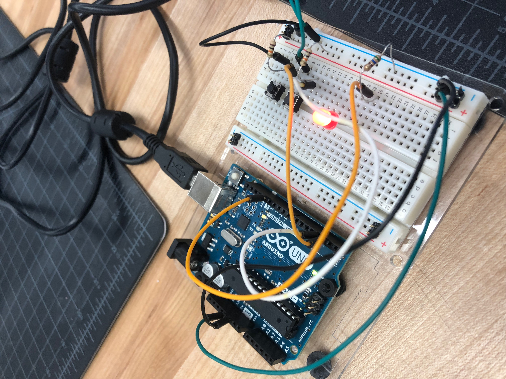
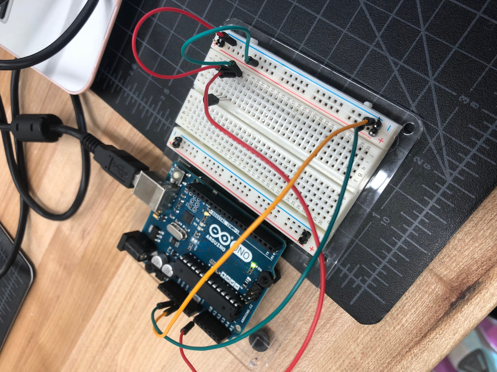
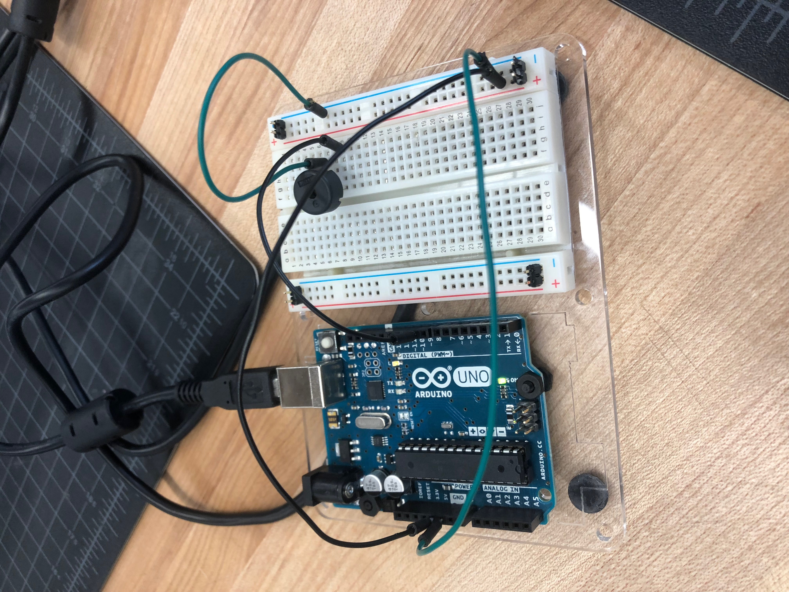
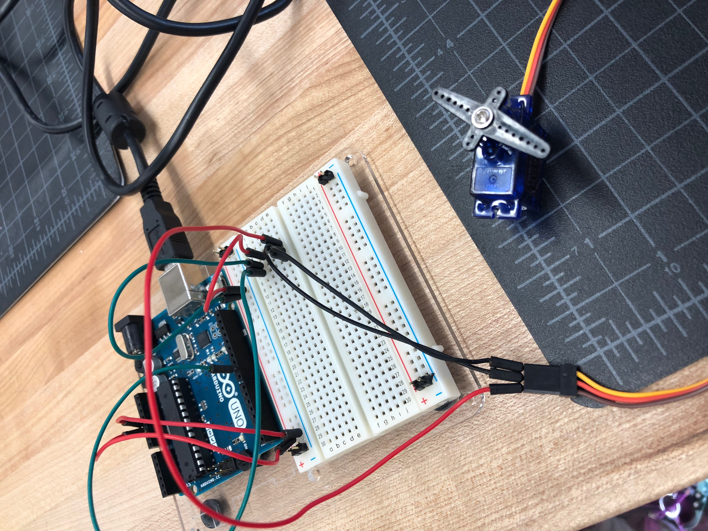
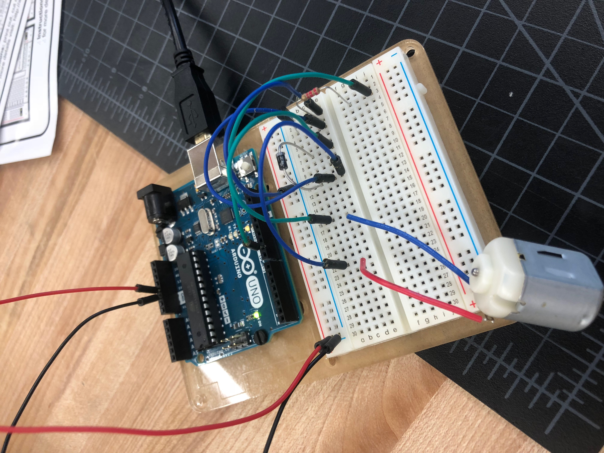
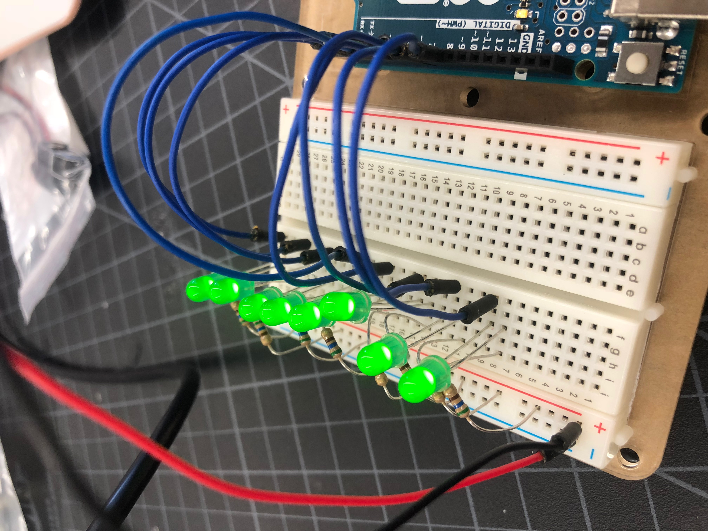
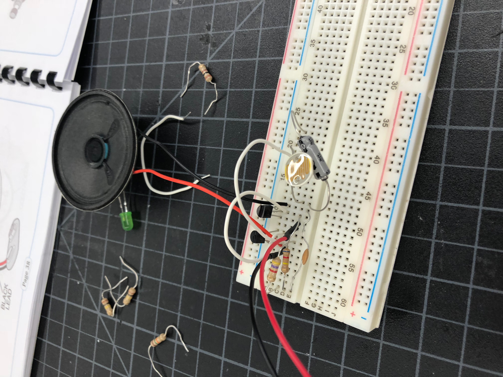
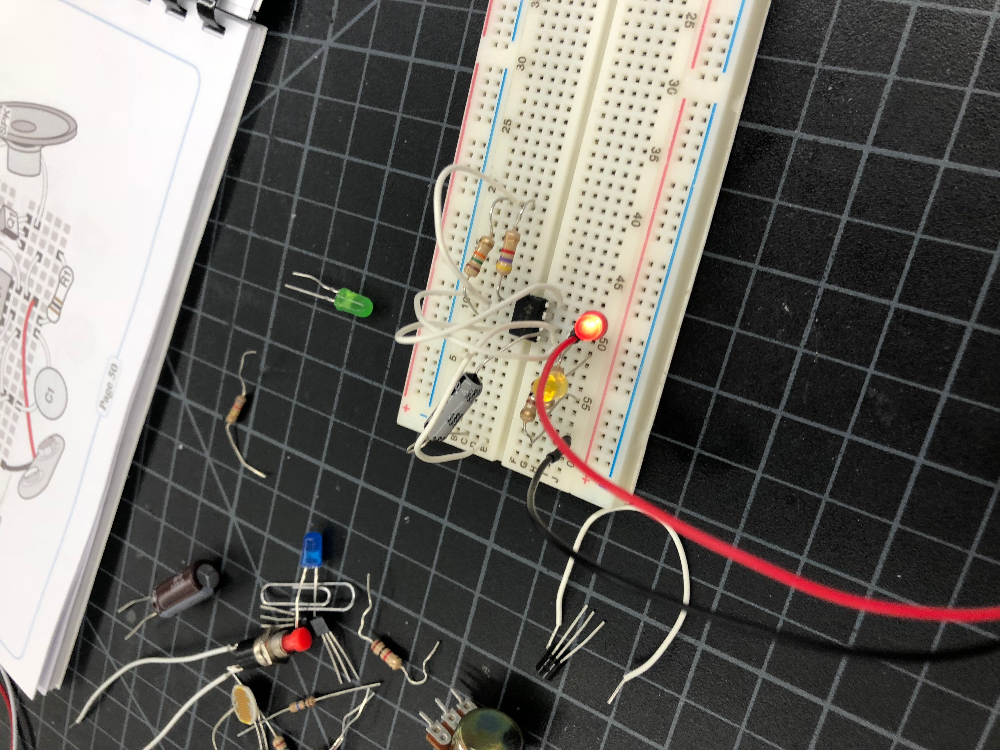

Rotation 9: Arduino
Project Description:
For Arduino, we were supposed to document and complete at least 6 projects from the guide. On our computers, we downloaded the program Arduino and put it in our Google Drives. Thankfully, for time, the program already had the coding done for each different project we would do. Arduino was fun to use to learn how a circuit works and it was exciting to see the final outcome of all the pieces come together to create a circuit. Below are pictures of some of the circuits I created through Arduino.








